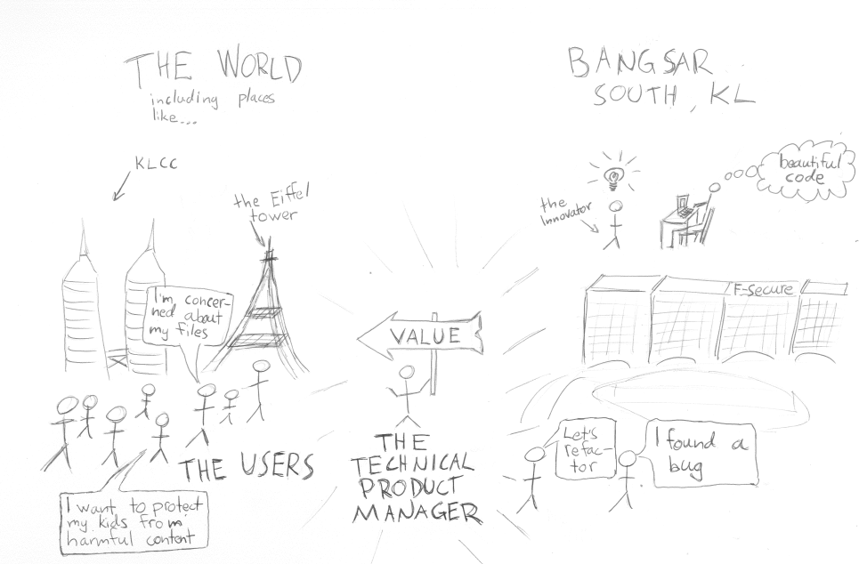

The first time I coached product owners is about 10 years ago. One of the first things I did when starting to get into product owner competence was to draw a picture of it.
I used to work at F-Secure and I was visiting our Kuala Lumpur (KL) development center. This is how I pictured product ownership in that setting.

Picturing product owner work
The important bits are:
The world on the left - Note the speech bubbles telling about the key needs of users (it was actually pretty much our brand promise at the time)
"Our company" on the right - with all the people and their skills. I wanted to show that people in our company have differing opinions and drives.
The Product Owner (aka. Technical product manager) in the middle - Notice the signage "value".
Well... is there anything else to specify....?
PS: This kind of stick-figure picture is quite quick to draw. Even by someone like me who has absolutely no skill at drawing.
Originally published on LinkedIn on May 25, 2023